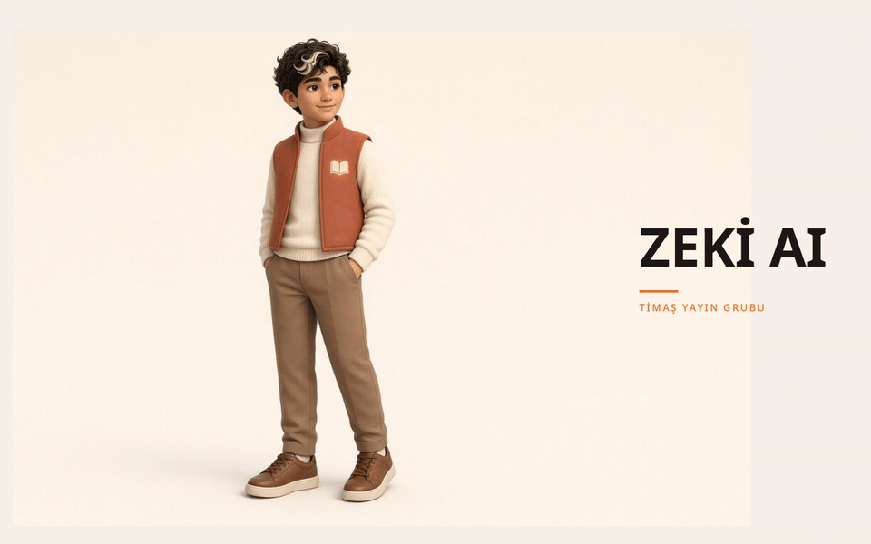

Çalışma Alanı
/
Genel Bakış
Tasarım Önizlemesi · Örnek Veriler
Önizleme
Yönetim Bilgi Sistemi · Q2 Raporu
Veriniz, net bir bakışta.
Verinizi anlayın, anomalileri keşfedin ve bir sonraki stratejik adımı güvenle atın.
Örnek sorular:

Net Satış
+%18,4
₺12,8
Mn
Geçen yıl: ₺10,8 Mn
· Örnek veri
Brüt Kâr
+%12,1
₺4,2
Mn
Marj: %32,8
· Örnek veri
Sipariş Adedi
+%8,2
1.284
adet
Ort. sepet: ₺9.968
· Örnek veri
Bütçe Gerçekleşme
Hedef: %95
%94,2
Olağan
Yıl sonu proj: %98,5
· Örnek veri
Satış Performansı
Kümülatif ₺Cari dönem ile önceki yıl gerçekleşen gelir karşılaştırması
2025 (Cari)
2024 (Önceki)
Yıllık satış büyüme trendi Q3 sonu itibarıyla hedeflenen bandın %3 üstündedir.
Simülasyon bazlı örnek değerler
Verinin Anlattıkları
Hacim & Gelir
Bugün
Net satışta görülen +%18,4 artışın %62'si büyük ölçekli kurumsal abonelik yenilemelerinden kaynaklandı.
Dikkat: Bütçe Sapması
Kritik
Pazarlama harcamalarında Q2 bütçesine kıyasla ₺340.000 tutarında geçici aşım tespit edildi.
Müşteri Sadakati
Dün
Ortalama sepet büyüklüğü ₺9.968 seviyesine çıkarak son 4 çeyreğin en yüksek değerine ulaştı.
Son erişilen panolar
· Hızlı çalışma alanlarıSatış Özeti
Son güncelleme: 23 dk önce
₺12,8M
+18.4%
Finansal Görünüm
Son güncelleme: 2 saat önce
₺4,2M
Brüt Marj %33
Müşteri Analizi
Son güncelleme: Dün 18:40
Net Retention
%118
+4.2% YoY